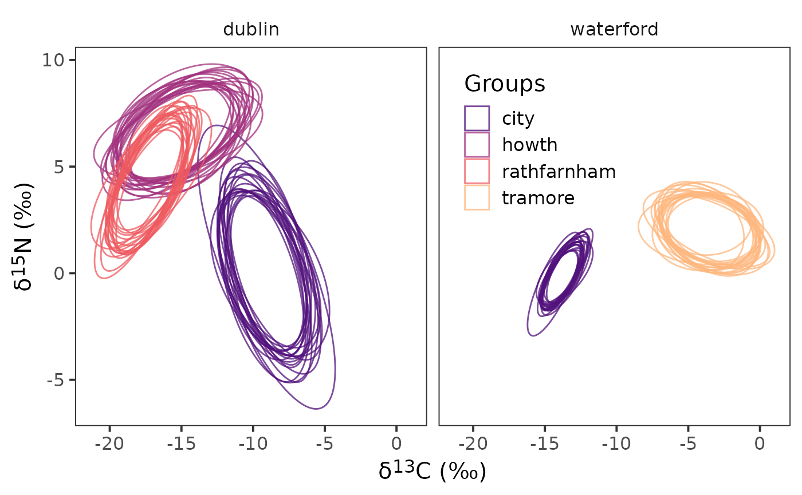
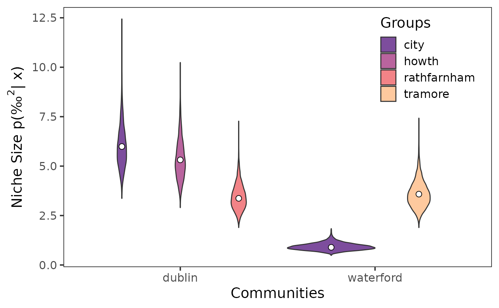
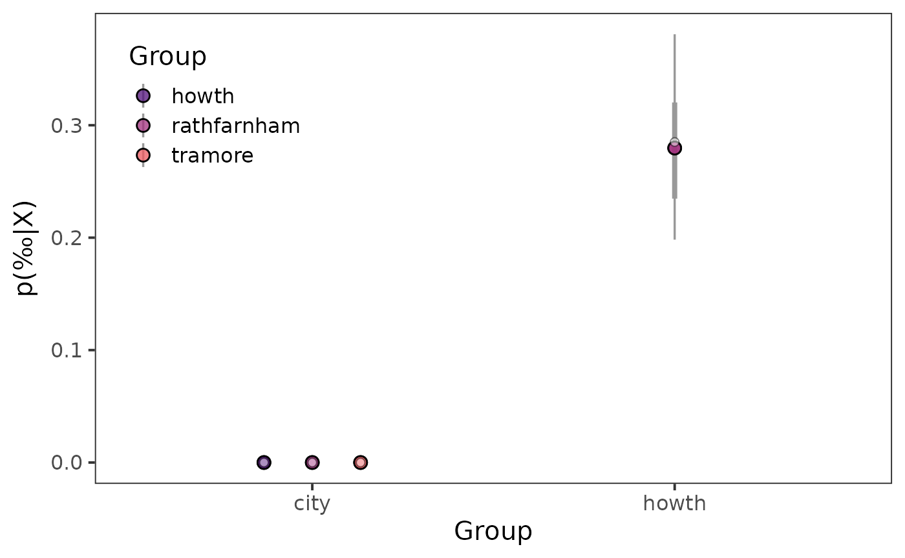

Using {nichetools} with SIBER
Benjamin L. Hlina
2024-08-29
Source:vignettes/using-nichetools-with-the-package-SIBER.Rmd
using-nichetools-with-the-package-SIBER.RmdOur Objectives
The purpose of this vignette is to use {SIBER} and {nichetools} to extract and then visualize estimates of trophic niche size and similarities and Layman community metrics for multiple freshwater fish using {ggplot2}.
This vignette can be used for additional purposes including estimating niche size and similarities among different groups of aquatic and/or terrestrial species. Furthermore, niche size and similarities for different behaviours exhibited within a population can be made using behavioural data generated from acoustic telemetry (e.g., differences in habitat occupancy).
Bring in trophic data
First we will load the necessary packages to preform the analysis and visualization. We will use {SIBER} and {nichetools} to preform the analysis. We will use {bayestestR} to calculate and extract medians and Equal-Tailed Interval (ETI) of posterior distributions that we want to plot. We will use {dplyr}, {tidyr}, and {purrr} to manipulate data and iterate processes. Lastly, we will use {ggplot2}, {ggtext}, and {ggdist} to plot and add labels.
I will add that many of the dplyr and tidyr functions and processes can be replaced using {data.table} which is great when working with large data sets.
We will first load the packages that were just mentioned
{
library(bayestestR)
library(dplyr)
library(ggplot2)
library(ggdist)
library(ggtext)
library(nichetools)
library(purrr)
library(SIBER)
library(tidyr)
library(viridis)
}For the purpose of the vignette we will be using the
demo.siber.data.2 data frame that is available within
{SIBER}. We will first look at the structure of this data
frame using the dplyr function glimpse().
For your purposes you will need to replace this with your data frame
either by loading a csv, rds, or qs file. You can do this multiple ways,
I prefer using readr::read_csv() for a csv but base R’s
read.csv() works perfectly fine. Note, {SIBER}
functions do not take tibbles or data.tables
so you will have to convert either to data.frame class
prior to running functions in {SIBER}.
glimpse(demo.siber.data.2)
#> Rows: 150
#> Columns: 4
#> $ iso1 <dbl> -11.048902, -8.809360, -9.256212, -8.380952, -10.401561, -7.…
#> $ iso2 <dbl> 1.02044315, 1.97597511, 3.28707260, -1.95750266, -3.11949113…
#> $ group <chr> "city", "city", "city", "city", "city", "city", "city", "cit…
#> $ community <chr> "dublin", "dublin", "dublin", "dublin", "dublin", "dublin", …You will notice that the community and group column are character
strings that are the actual names of the communities and groups. I
advise changing them into factors, thus allow you to know the order for
each column prior to converting them into a numeric and
then a charcter. The reason why this is important, is that
functions in {SIBER} use for loops based on
the indexing of the SiberObject. If this order does not
match up you can have issues with the names of the communities and
groups you are working with.
Let us change these into a factor, then preserve the
column and create an id column that is the numerical order that will
become the community and group names provided to
createSiberObject().
demo.siber.data.2 <- demo.siber.data.2 %>%
mutate(
group = factor(group),
community = factor(community),
group_id = as.numeric(group) %>%
as.character(),
community_id = as.numeric(community) %>%
as.character()
) %>%
rename(
group_name = group,
community_name = community,
group = group_id,
community = community_id
)
glimpse(demo.siber.data.2)
#> Rows: 150
#> Columns: 6
#> $ iso1 <dbl> -11.048902, -8.809360, -9.256212, -8.380952, -10.401561…
#> $ iso2 <dbl> 1.02044315, 1.97597511, 3.28707260, -1.95750266, -3.119…
#> $ group_name <fct> city, city, city, city, city, city, city, city, city, c…
#> $ community_name <fct> dublin, dublin, dublin, dublin, dublin, dublin, dublin,…
#> $ group <chr> "1", "1", "1", "1", "1", "1", "1", "1", "1", "1", "1", …
#> $ community <chr> "1", "1", "1", "1", "1", "1", "1", "1", "1", "1", "1", …After we have done this, we are going to create two data frames that are the names of our communities and groups with their associated id values. We will use these data frames later on to join up the actual names, allowing us to know what estimates belong to which communities and groups. We are doing this because it is unlikely you will have communities and groups named 1, 2, 3 ect. and instead will have actual names.
# ---- create name with group and community data frame ----
cg_names <- demo.siber.data.2 %>%
distinct(group,
community,
group_name,
community_name) %>%
arrange(community, group)
# ---- create community names data frame ----
c_names <- demo.siber.data.2 %>%
distinct(community,
community_name) %>%
arrange(community)We will then plot our biplot to confirm we have the correct structure.
ggplot(data = demo.siber.data.2, aes(x = iso1, y = iso2,
colour = group_name)) +
geom_point() +
facet_wrap(~ community_name) +
scale_colour_viridis_d(option = "A", begin = 0.25, end = 0.85,
name = "Groups", alpha = 0.75) +
theme_bw(
base_size = 15
) +
theme(
strip.background = element_blank(),
panel.grid = element_blank(),
axis.title = element_markdown(),
legend.position = "inside",
legend.position.inside = c(0.65, 0.75)
) +
labs(
x = paste0("\U03B4","<sup>", 13, "</sup>", "C", " (‰)"),
y = paste0("\U03B4","<sup>", 15, "</sup>", "N", " (‰)")
)
Next we will grab the isotopes we need and the community and group
ids that have already been renamed to community and
group. This is important as creatSiberObject()
will 1) only take the following order with the following names
iso1, iso2, group, and
community and 2) we will transform this tibble
into a data.frame as {SIBER} will only work
with a data.frame. In this case we were using
tibbles but we could also be working with
data.table and will need to do the same thing.
Convert to {SIBER} object
First convert to our isotope data into a {SIBER}
object.
siber_example <- createSiberObject(demo_siber_data)Now that this is a {SIBER} object we can start doing
some analysis using a frequentist (e.g., maximum-likelihood) or a
Bayesian framework. The data and metrics generated through this analysis
by {SIBER} can be extracted using functions in
nichetools.
Bayesian Ellipse Analysis
We first need to set the parameters to run the model
# options for running jags
parms <- list()
parms$n.iter <- 2 * 10^4 # number of iterations to run the model for
parms$n.burnin <- 1 * 10^3 # discard the first set of values
parms$n.thin <- 10 # thin the posterior by this many
parms$n.chains <- 2 # run this many chainsNext we need to define the priors for each parameter of the model. This includes fitting the ellipses using an Inverse Wishart prior on the covariance matrix (), and a vague normal prior on the means ().
# fit the ellipses which uses an Inverse Wishart prior on the
# covariance matrix Sigma, and a vague normal prior on the
# means.
priors <- list()
priors$R <- 1 * diag(2)
priors$k <- 2
priors$tau.mu <- 1.0E-3We will now run the model using the function
siberMVN().
ellipses_posterior <- siberMVN(siber_example, parms, priors)Extract posterior distributions for μ and Σ
We will first extract posterior distribution for
using extract_mu() in nichetools. We will
need to set the argument pkg to "SIBER" and
the argument data_format to "wide". This
argument takes "long" or "wide" which dictates
whether the data object returned is in wide or long format. We will also
use the function seperate_wider_delim() from
tidyr to separate the community and groups names as they
are joined by a .. We then will use
left_join() and the cg_names data frame we
created above to add in the correct community and group names.
df_mu <- extract_mu(ellipses_posterior, pkg = "SIBER",
data_format = "wide",
community_df = cg_names)We can confirm that the posterior estimates of are correct by plotting them with {ggplot2}.
ggplot() +
geom_point(data = df_mu, aes(x = d13c, y = d15n,
colour = group_name)) +
geom_point(data = demo.siber.data.2, aes(x = iso1, y = iso2,
colour = group_name)) +
facet_wrap( ~ community_name) +
scale_colour_viridis_d(option = "A", begin = 0.25, end = 0.85,
name = "Groups", alpha = 0.75) +
theme_bw(
base_size = 15
) +
theme(
strip.background = element_blank(),
panel.grid = element_blank(),
axis.title = element_markdown(),
legend.position = "inside",
legend.position.inside = c(0.65, 0.75)
) +
labs(
x = paste0("\U03B4","<sup>", 13, "</sup>", "C", " (‰)"),
y = paste0("\U03B4","<sup>", 15, "</sup>", "N", " (‰)")
)Notice the density of points in the center of the raw data for the corresponding colours. This density of points are the posterior estimates from the model for and are an indication that the model is iterating over the groups and communities correctly.
We are also going to extract in long format for creating ellipse, as the function that create ellipse needs the data frame of to be in long format.
df_mu_long <- extract_mu(ellipses_posterior, pkg = "SIBER",
community_df = cg_names)Next we are going to extract posterior estimates of
using extract_sigma().
df_sigma <- extract_sigma(ellipses_posterior, pkg = "SIBER")Lastly, we are going to feed each
and
estimate to niche_ellipse() to estimate each ellipse. There
are few things to know about this function and they include the
following: 1) it will randomly sample 10 ellipse from the total
posterior distribution of
and
,
this seems quite standard, however, you can adjust the number of samples
by changing the argument n. 2) to make the function
consistently randomly sample the same set you will need to set
set_seed to a numerical value. If this is not set then it
will randomly sample a different set of 10 ellipses every time. 3) if
you would like the function to not randomly sample set the argument
random to FALSE. 4) by default it will tell
you how long it takes to generate the ellipse and will have progress
bars at each step. If you want to turn this off set message
to FALSE. 5) if you are wanting to change the confidence
level of the ellipse you can do so using the argument
p_ell. This value is bound between 0 and 1.
df_el <- niche_ellipse(dat_mu = df_mu_long,
dat_sigma = df_sigma,
set_seed = 4, n = 20) %>%
separate_wider_delim(sample_name, cols_remove = FALSE,
delim = ".", names = c("community",
"group")) %>%
left_join(cg_names)Now that we have the ellipses created we can plot them.
ggplot(data = df_el,
aes(x = d13c, y = d15n,
group = interaction(sample_number,
sample_name),
colour = group_name)) +
geom_polygon(linewidth = 0.5, fill = NA) +
facet_wrap( ~ community_name) +
scale_colour_viridis_d(option = "A", begin = 0.25, end = 0.85,
name = "Groups", alpha = 0.75) +
theme_bw(
base_size = 15
) +
theme(
strip.background = element_blank(),
panel.grid = element_blank(),
legend.position = "inside",
axis.title = element_markdown(),
legend.background = element_blank(),
legend.position.inside = c(0.65, 0.75)
) +
labs(
x = paste0("\U03B4","<sup>", 13, "</sup>", "C", " (‰)"),
y = paste0("\U03B4","<sup>", 15, "</sup>", "N", " (‰)")
)
Extract Niche Size
We can use siberEllipses() from {SIBER} to estimate
niche size for each posterior sample for each community and group.
sea_b <- siberEllipses(corrected.posteriors = ellipses_posterior)Next using extract_niche_size() from
nichetools we can extract niche size which will also add
in the correct names for the communities and groups we are working
with.
seb_convert <- extract_niche_size(data = sea_b,
pkg = "SIBER",
community_df = cg_names)We will also extract the parametric estimate for niche size using
groupMetricsML() from {SIBER}.
group_ml <- groupMetricsML(siber_example)We can convert the output of this function using
extract_group_metrics().
group_convert <- extract_group_metrics(data = group_ml,
community_df = cg_names)The object returned will have maximum-likelihood estimates for the
standard ellipse area (SEA), the central standard ellipse area (SEAc),
and the total area (TA). For plotting niche size we will use
SEAc.
Lastly, we can visualize the extracted niche sizes using {ggplot2}.
ggplot() +
geom_violin(data = seb_convert, aes(x = community_name,
y = sea,
fill = group_name)) +
scale_fill_viridis_d(option = "A", begin = 0.25, end = 0.85,
name = "Groups", alpha = 0.75) +
geom_point(data = sea_c, aes(x = community_name,
y = est,
group = group_name,
),
size = 2.5,
fill = "white",
shape = 21,
position = position_dodge(width = 0.9)) +
theme_bw(
base_size = 15
) +
theme(
strip.background = element_blank(),
panel.grid = element_blank(),
legend.position = "inside",
legend.background = element_blank(),
legend.position.inside = c(0.85, 0.8)
) +
labs(
x = "Communities",
y = expression(paste("Niche Size p(", "‰"^2, "| x)"))
)
Niche Similarties
Now that we have extracted Bayesian estimates of niche size we are likely wanting to know how much do these niches have in common or are similar.
We can use maximum-likelihood and Bayesian frameworks to estimate the
percentage of similarity within communities between groups and/or among
communities with groups being consistent. We can use functions in
{SIBER} to create maximum-likelihood and Bayesian estimates
of niche similarity followed by functions in nichetools
to extract these similarities.
First we need to create our comparisons that we are wanting to
evaluate. We can use the function create_comparisons() to
generate a list that has two-column data frames of each comparison. You
can change the argument comparison to "among"
to compare communities for the same group, versus "within"
which compares groups within a community.
cg_names_within_com <- cg_names %>%
create_comparisons(comparison = "within")Next we can feed this listed data frames to either
maxLikOverlap() or bayesianOverlap() using
map() from purrr. For this exercise I have
not changed .progress argument of map() but
when working with large data sets I often turn this argument to
TRUE to provide a progress update.
ml_within_overlap <- cg_names_within_com %>%
map(~ maxLikOverlap(.x$cg_1, .x$cg_2, siber_example,
p.interval = 0.95, n = 100))Next we can extract estimates using
extract_similarities() with the type argument
set to "ml".
ml_95_within_com <- extract_similarities(ml_within_overlap,
type = "ml",
community_df = cg_names)Now we will repeat the process for bayesianOverlap(),
first supplying the function with our list of data frames, next having
map() iterate over this list.
bayes95_overlap <- cg_names_within_com %>%
map(~ bayesianOverlap(.x$cg_1, .x$cg_2, ellipses_posterior,
draws = 100, p.interval = 0.95,
n = 100)
)Next we can extract estimates using
extract_similarities() with the type argument
set to "bay".
bays_95_overlap <- extract_similarities(bayes95_overlap,
type = "bay",
community_df = cg_names)Now that we have extracted maximum-likelihood and Bayesian estimates we can visualize them.
Prior to creating a point interval plot, we need to create a colour palette that will be used to identify each community.
viridis_colors_s <- viridis(4, begin = 0.25, end = 0.85,
option = "A",
alpha = 0.75
)Now we can use point interval plots to visually represent posterior distributions.
ggplot() +
stat_pointinterval(data = bays_95_overlap,
aes(x = group_1,
y = prop_overlap,
point_fill = group_2),
interval_colour = "grey60",
point_size = 3,
shape = 21,
position = position_dodge(0.4)) +
geom_point(data = ml_95_within_com, aes(x = group_1,
y = prop_overlap,
group = group_2),
shape = 21,
fill = "white",
size = 2,
alpha = 0.5,
position = position_dodge(0.4)) +
scale_fill_manual(name = "Group",
aesthetics = "point_fill",
values = viridis_colors_s) +
theme_bw(
base_size = 15
) +
theme(
panel.grid = element_blank(),
strip.background = element_blank(),
legend.position = "inside",
legend.position.inside = c(0.15, 0.80),
) +
labs(
x = "Group",
y = expression(paste("p(", "‰", "|X)"))
)
Bayesian Estimates of Layman’s Community Metrics
First I highly recommend reading Layman et al. 2007 to understand the six community metrics that will be estimating using a Bayesian framework in this section.
To create maximum-likelihood estimate of Layman’s community metrics
we first need to use communityMetricsML() from
{SIBER}.
community_ml <- communityMetricsML(siber_example)Then we can extract these estimates using
extract_layman() with the type argument set to
"ml". The default for this argument is
"bay".
layman_ml <- extract_layman(community_ml,
type = "ml",
community_df = c_names)To create Bayesian estimates of Layman’s community metrics we first
need to use extractPosteriorMeans() from
{SIBER} to extract posterior estimates of means for each
community and group.
mu_post <- extractPosteriorMeans(siber_example, ellipses_posterior)Next we need to use bayesianLayman() from
{SIBER} and use our extracted posterior means to create
Bayesian estimates for each community metric.
layman_b <- bayesianLayman(mu.post = mu_post)Once we have created our Bayesian estimates for each community metric
we can use extract_layman() to extract these estimates. The
function will also create the variable labels which will
first assign a new name to each community metric and secondly will
reorder these names based on how these metrics are often viewed.
layman_be <- extract_layman(layman_b, community_df = c_names)Prior to creating a point interval plot, we need to create a colour palette that will be used to identify each community.
viridis_colors <- viridis(2, begin = 0.25, end = 0.85,
option = "G",
alpha = 0.75
)Lastly, we can visualize the distributions of the posterior estimates
using stat_pointinterval() from {ggdist}.
ggplot() +
stat_pointinterval(
data = layman_be, aes(x = labels,
y = post_est,
point_fill = community_name),
point_size = 2.5,
interval_colour = "grey60",
position = position_dodge(0.4),
shape = 21
) +
geom_point(data = layman_ml, aes(x = labels,
y = estimate,
group = community_name),
shape = 21,
fill = "white",
alpha = 0.5,
position = position_dodge(0.4)) +
scale_fill_manual(name = "Community",
aesthetics = "point_fill",
values = viridis_colors) +
theme_bw(
base_size = 15
) +
theme(
panel.grid = element_blank(),
axis.text = element_markdown(),
legend.position = "inside",
legend.position.inside = c(0.88, 0.85),
) +
labs(
x = "Community Metrics",
y = expression(paste("p(", "‰", "|X)"))
)Congratulations, we have successfully used functions from
{SIBER} to extract and visually represent trophic
communities and niche size and similarities. If you something doesn’t
work/is confusing please reach out.